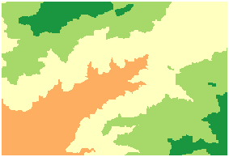

As you can see the raster style changes dramatically, showing discrete ranges of values. So, for example, all values below 1000 until 500 will be drawn in orange.

This step completes the lesson, click move to next step to finish it.